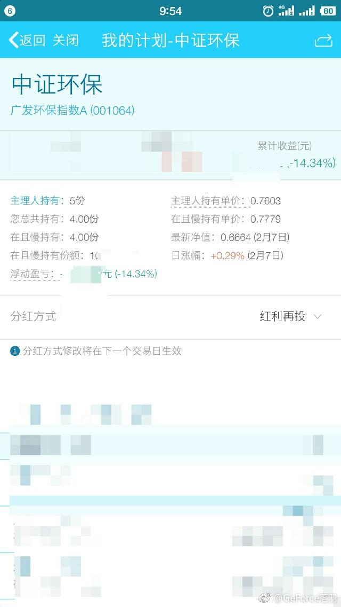
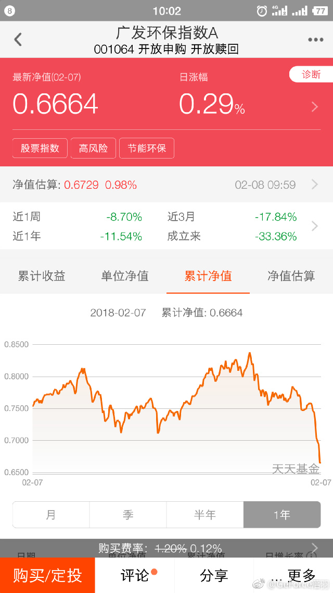

我反思了一下，最近总是黑“蓝筹股”也是不对的。毕竟无论是恒生、50还是红利，都只有15、16倍的估值，绝对值来讲真的没那么贵。也就是说，它们的成分股，大部分并不会让你套3-5年。有些“蓝筹股”还是会套。这个也没办法。我只希望红利继续压一压，咱们继续买。总体看，大盘、价值股配置的还是不够，希望有机会继续加。
回复@中江笑天:金融危机可能。没有金融危机30%到头了。做投资就怕涨起来信心百倍，跌下去感觉无限深渊。//@中江笑天:E大，深圳交易所公布的中小板平均市盈率现在是38倍，极度低估时曾经到过18倍。从这个指数看市场如果极端情况下还有可能下跌50%，请教您怎么看？感觉您比俺更乐观。@ETF拯救世界:真的很感慨，也很感动。等了几年，又一次资产飞跃的机会要来了。耐心真的是优质特征。
回复@吃货的幸福味道:不关注公众号 chinaetfs 的都不是真爱。//@吃货的幸福味道:每次有写场内场外代码吗？没的看到啊，只看到场外的代码，我是在且慢上看的@GeForce:E大，有两个问题想请教您。长赢计划中持仓的中证环保指数，较买入时均价跌幅已达14%以上，均值已创历史新低，2月第二次发车中怎么不考虑买入此指数。是否因此基金规模较小且成立时间较短;还是估值发生变化有进一步下跌的可能而不考虑加仓？@ETF拯救世界 @且慢管家 且慢中买入的都是场外基金，可E大你的名字是场内基金拯救世界啊！开个玩笑。是因为考虑溢价，所以推荐大家买场外吧，私问您买入的大多是场内还是场外？
回复@沙柳垂钓:你从哪儿拿的数据。跟我自己算的不同。另外，进入历史最低15%就要重仓这种说法合理吗。不合理。一叶障目了。我买东西要考虑的因素非常多，历史区间因素只占14.89%的比重。@GeForce:E大，有两个问题想请教您。长赢计划中持仓的中证环保指数，较买入时均价跌幅已达14%以上，均值已创历史新低，2月第二次发车中怎么不考虑买入此指数。是否因此基金规模较小且成立时间较短;还是估值发生变化有进一步下跌的可能而不考虑加仓？@ETF拯救世界 @且慢管家 且慢中买入的都是场外基金，可E大你的名字是场内基金拯救世界啊！开个玩笑。是因为考虑溢价，所以推荐大家买场外吧，私问您买入的大多是场内还是场外？
第一，场内场外我每次都写得清清楚楚，代码都有，自己选。第二，如果让我说，大部分人其实适合场外。目前我们的ETF市场不成熟，很多品种交易量承受不了我们这么多人同时交易的需求。第三，每个品种都有它的仓位配比上限。环保本身给的仓位就不会很大，所以不会看见跌就买。说过很多次了。@GeForce:E大，有两个问题想请教您。长赢计划中持仓的中证环保指数，较买入时均价跌幅已达14%以上，均值已创历史新低，2月第二次发车中怎么不考虑买入此指数。是否因此基金规模较小且成立时间较短;还是估值发生变化有进一步下跌的可能而不考虑加仓？@ETF拯救世界 @且慢管家 且慢中买入的都是场外基金，可E大你的名字是场内基金拯救世界啊！开个玩笑。是因为考虑溢价，所以推荐大家买场外吧，私问您买入的大多是场内还是场外？
价投命短的积累钱少，都没法成名。复利导致最后十年可能赚到所有财产的90%。//@买买提X:这个不懂，老外的说法是做长线价值投资的长寿~@甫学进:练字健康长寿@鸡毛蒜皮与鸡毛蒜皮 @朱毅 很有道理。古往今来，绝大数书法家均为高寿。如唐代欧阳询85岁，柳公权88岁，明代文征明90岁，历史上四个帝王书家梁武帝萧衍86岁，武则天82岁，宋高宗赵构81岁，乾隆89岁。东汉以来,约有150位书法家，平均年龄为71岁。明清两代人的平圴寿命为33岁,但书法家的寿命为79岁。特别近现代我们所熟知的书法家如齐白石97岁，沈君默89岁,被称为“南仙北佛”的北京孙墨佛109岁。上海苏局仙110岁。